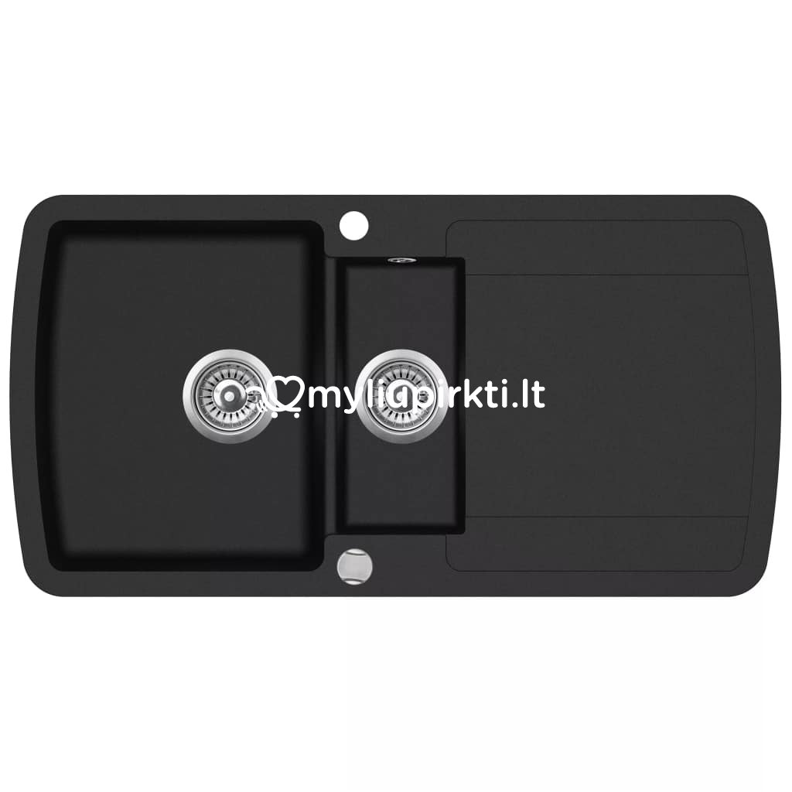

virtuvinė įranga
▷ Pramoninė virtuvės įranga, restoranų įranga, indai restoranams | Įranga restoranams

Užsiregistruoti / Prisijungti 8 630 99009 I - V 09:00 - 18:00 0 prekių - 0.00€ Jūsų pirkinių krepšelis tuščias!
Kategorijos Maisto gamybos įranga Apranga maisto pramonei Atsarginės dalys / Priedai Daržovių apdirbimo įranga Griliai Įrangos nuoma Kebabinių įranga Kepyklų įranga Konvekcinės krosnys Maisto išdavimas / savitarna Maisto transportavimo konteineriai Makaronų gamybos įranga Mėsos apdirbimo įranga Nerūdijančio plieno gaminiai Paverčiamos keptuvės Picerijų įranga Prekybiniai, ekspoziciniai indai Smulki gamybinė įranga Vakuumatoriai Virimo katilai Viryklės Peržiūrėti visus Maisto gamybos įranga Indų plovimo įranga Konvejerinės indų plovimo mašinos Kupolinės indaplovės Padėklai indų plovimui Pobarinės indaplovės Priedai indų plovimui Priemonės indų plovimui Virtuvės indų ir inventoriaus plovimas Peržiūrėti visus Indų plovimo įranga Šaldymo įranga Baro šaldytuvai Dažyto plieno korpuso šaldytuvai/šaldikliai Impulsinio pirkimo šaldytuvai Ingredientų vitrinos Ledo generatoriai Ledų gamybos įranga Mėsos brandinimo spintos Mini baro šaldytuvai Nerūdijančio plieno korpuso šaldytuvai Prekybiniai šaldikliai Prekybiniai šaldytuvai Šaldikliai ledams Šaldomi stalai Šaldymo vitrinos Šaldytuvai vynui Šildomos vitrinos Smūginio užšaldymo įranga Sushi vitrinos Vyno šaldytuvai Peržiūrėti visus Šaldymo įranga Baro reikmenys Baldai banketams Baro blenderiai Baro inventorius Citrusinių vaisių sulčiaspaudės Dantų krapštukai Informaciniai ženkliukai Išorinė reklama ir reklaminės lentelės Kavamalės Kavos aparatai Kolbos alui Lauko inventorius Ledo generatoriai barams Maisto išdavimo inventorius Padavėjo padėklai Perkuliatoriai Poliravimo mašinos Peržiūrėti visus Baro reikmenys Virtuvės reikmenys Dubenys Galąstuvai GN indai Keptuvės Konditerijos reikmenys Peiliai Pjaustymo lentelės Puodai Šiukšliadėžės Smulkūs virtuvės reikmenys Svarstyklės Termometrai Peržiūrėti visus Virtuvės reikmenys Serviravimo reikmenys Stalo indai Stalo įrankiai Kita Indų nuoma Peržiūrėti visus Serviravimo reikmenys AKCIJOS Kontaktai Maisto gamybos įranga Indų plovimo įranga Šaldymo įranga Baro reikmenys Virtuvės reikmenys Stalo serviravimuiBaro reikmenys
Indų plovimo įranga
Maisto gamybos įranga
Šaldymo įranga
Virtuvės reikmėnys
Maisto gamybos įranga
Smulki gamybinė įranga Kebabinių įranga Picerijų įranga Kepyklų įranga Mėsos apdirbimo įranga Makaronų gamybos įranga Daržovių apdirbimo įranga Konvekcinės krosnys Nerūdijančio plieno gaminiai Griliai Vakumatoriai Viryklės Maisto transportavimo konteineriai Apranga maisto pramonei Prekybiniai, ekspoziciniai indai Atsarginės dalys / Priedai Įrangos nuomaMaisto gamybos įranga
PJAUSTYKLĖ HENDI PROFI LINE 250
451.54€
Į krepšelįMĖSMALĖ KITCHEN LINE 12
478.11€
Į krepšelįKONVEKCINĖ GARŲ KROSNELĖ 4x 429x345 MM
732.11€
Į krepšelįGRUZDINTUVĖ BLUE LINE 2x4l
207.89€
Į krepšelįELEKTRINĖ DARŽOVIŲ PJAUSTYKLĖ - 540x240x450 mm
716.05€
Į krepšelįDVIGUBAS KONTAKTINIS GRILIS
398.38€
Į krepšelį
Indų plovimo įranga
Pobarinės indaplovės Kupolinės indaplovės Konvejėrinės indų plovimo mašinos Padėklai indų plovimui Priemonės indų plovimuiIndų plovimo įranga
VEŽIMĖLIS INDAPLOVIŲ KREPŠIAMS VEŽTI - 7x 500x500 MM - 630x700x1700 mm
176.56€
Į krepšelįSpaudiminis dušas
229.89€
Į krepšelįPROFESIONALUS PLOVIMO SKYSČIO KONCENTRATAS, SKIRTAS INDAMS RANKOMIS PLAUTI
7.26€
Į krepšelįPROFESIONALUS INDAPLOVĖMS SKIRTAS PLOVIKLIS - 10 l
24.53€
Į krepšelįKREPŠYS PUODELIAMS
14.35€
Į krepšelįINDAPLOVIŲ KREPŠYS LĖKŠTĖMS
11.70€
Į krepšelį
Šaldymo įranga
Šaldymo vitrinos Nerūdyjančio plieno korpuso šaldytuvai Dažyto plieno korpuso šaldytuvai Smūginio užšaldymo įranga Ingrediantų vitrinosŠaldymo įranga
ŠALDYMO VITRINA 110 - 700x557x670 mm
743.87€
Į krepšelįŠALDOMA VITRINA 6 x GN 1/3
557.83€
Į krepšelįGREITO UŽŠALDYMO KAMERA 3X GN 1/1 - 750x740x720/750 mm
1,807.64€
Į krepšelį2 DURŲ ŠALDYMO STALAS, AGREGATAS ĮMONTUOTAS APAČIOJE - 900x700x880 mm
717.30€
Į krepšelį1 DURŲ 410 L TALPOS ŠALDIKLIS PROFI LINE - 600 x745x1950 mm
1,275.40€
Į krepšelį
Baro reikmenys
Baro inventorius Baro blenderiai Citrusinių vaisių sulčiaspaudės Kavos aparatai Kavamalės Perkuliatoriai Poliravimo mašinos Ledo generatoriai Padavėjo padėklai Išorinė reklama ir reklaminės lentelės Informaciniai ženkliukai BaldaiBaro reikmenys
MALŪNĖLIS LEDUI
38.09€
Į krepšelįLEDO GENERATORIUS
690.72€
Į krepšelįCITRUSINIŲ VAISIŲ SULČIASPAUDĖ - 300x200x350 mm
155.19€
Į krepšelį
Virtuvės reikmenys
Puodai Peiliai Dubenys GN indai Keptuvės Pjaustymo lentelės Šiukšliadėžės Termometrai Svarstyklės Konditerijos reikmenys Smulkūs virtuvės reikmenysVirtuvės reikmenys
VIRTUVINIS SKAITMENINIS LAIKMATIS - 65x70x17 mm
8.05€
Į krepšelįVIDUTINIO DYDŽIO PUODAS SU DANGČIU 14ltr.
71.64€
Į krepšelįPJAUSTYMO LENTELĖ HACCP GN 1/1 - geltona - žalia paukštiena - 530x325x15 mm
15.89€
Į krepšelįGN 1/1 65mm BUDGET LINE
9.72€
Į krepšelįGELTONOS SPALVOS PEILIAI HACCP PAUKŠTIENAI 180 mm,
5.28€
Į krepšelįALIUMINIO LYDINIO NEPRIDEGANČIOS TITANO DANGOS KEPTUVĖ 240 mm
33.63€
Į krepšelį
Serviravimo reikmenys
Stalo indai Taurės Termosai Lėkštės Marmitai Žnyplės Melamino indai Arbatinukai Puodeliai Degi pasta Žvakės Servetelės Ledainės Indų nuomaServiravimo reikmenys
Dviejų aukštų padėklas - etažerė su kojele
68.90€
Į krepšelįDEGIA PASTA PAŠILDOMAS STALO MARMITAS ROLLTOP GN 1/1 - 590x340x400 mm
117.71€
Į krepšelįDEGIA PASTA PAŠILDOMAS STALO MARMITAS GN 1/1 - 585x385x315 mm
52.88€
Į krepšelįStraipsniai Rodyti viską
Konvekcinė krosnis gaminantiems namuose. Ką pasirinkti?
Įranga restoranams 2020.10.19 Konvekcinė krosnis – tai nepamainomas įrenginys ne tik maitinimo įstaigoje, bet ir namuose, kuriuose vykdoma nedidelės apimties gamybinė veikla. Tiesa, renkantis šį prietaisą dar... Skaityti daugiauĮrangos apžvalga: vytinimo spinta SAMAREF
Įranga restoranams 2020.10.19 Naujausioje įrangos apžvalgoje sveikinamės iš CHORIZO miesto mėsinės, įsikūrusios Kaune. ĮRANGA RESTORANAMS vadovo Andrius bei naujasis ĮRANGA RESTORANAMS prekės ženklo ambasadoriu... Skaityti daugiauNerūdijančio plieno stalai: pirkti pagal užsakymą ar jau pagamintus?
Įranga restoranams 2020.10.08 Žinome, jog nė viena profesionali maitinimo įstaiga dirbti negali be jos poreikiams pritaikytų stalų bei stalviršių. Saugiausi, lengviausiai prižiūrimi ir geriausiai profesionali... Skaityti daugiauĮRANGA RESTORANAMS naujienos: įranga + šefo konsultacijos + reali gamybinė erdvė
Įranga restoranams 2020.10.05 Augame! Mūsų komanda plečiasi! Šiandien jums galime pasiūlyti, patarti ir parodyti netgi dar daugiau, nei anksčiau. ĮRANGA RESTORANAMS naujienosKviečiame spausti ▶️ ir susipaž... Skaityti daugiauAr žinojote: supaprastinta komercinė maisto gamyba namuose ir svarbiausia įranga
Įranga restoranams 2020.09.30 Tikrai ne paslaptis, jog prieš didžiąsias metų šventes net kelis kartus padidėja užsakymų namuose dirbantiems gastronomams, konditeriams ir kepėjams. Siekiant kaip galima efektyvi... Skaityti daugiauĮranga barui: 9 prietaisai, apie kuriuos turite pagalvoti
Įranga restoranams 2020.09.11 Dydžiu, našumu bei galingumu tinkamai parinkta įranga viešojo maitinimo įstaigos virtuvėje užtikrina greitesnį, kokybiškesnį, o kartu - ir taupesnį darbą. Tiesa, kalbant apie baro... Skaityti daugiauParsisiųskite mūsų programėlę:
Informacija
Kontaktai Kaip užsisakyti Atsiskaitymas Pristatymas Garantijos Grąžinimas Apie mus HoReCa technologinis projektavimas Prekių ženklai Dovanų kuponai AKCIJOS TinklaraštisKategorijos
Maisto gamybos įranga Indų plovimo įranga Šaldymo įranga Baro reikmenys Serviravimui reikmenys Virtuvės reikmėnysPagal veiklą
Kebabinių įranga Кеpyklų įranga Picerijų įrangaKlientų aptarnavimas
Mano paskyra Užsakymų istorija Partnerystės programa Grąžinimo registracijaKontaktai
Telefonas: 8 630 99009 El. paštas: uzsakymai@irangarestoranams.ltRekvizitai
Horekos servisas, UAB Įmonės kodas: 304502590 PVM kodas: LT100010946013Adresas
Veiverių g. 153 Kaunas LT-46417Posted by Jack  Read more
Read more  Comments (15)
Comments (15)  2020.10.30 04:09
2020.10.30 04:09